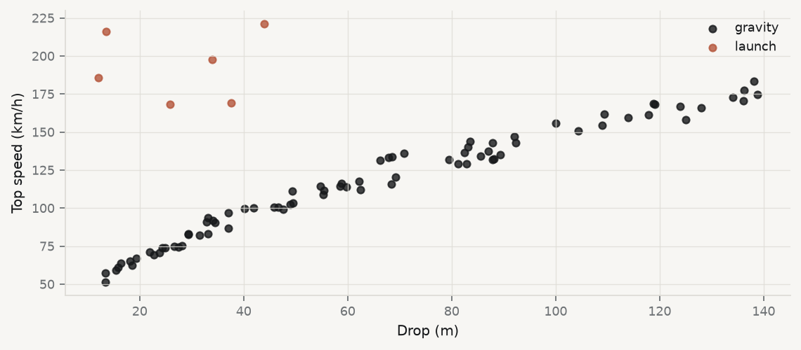
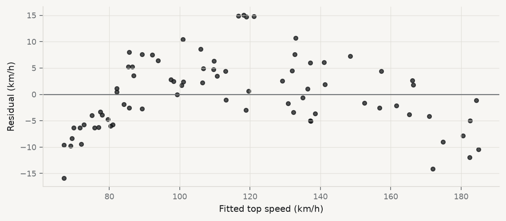
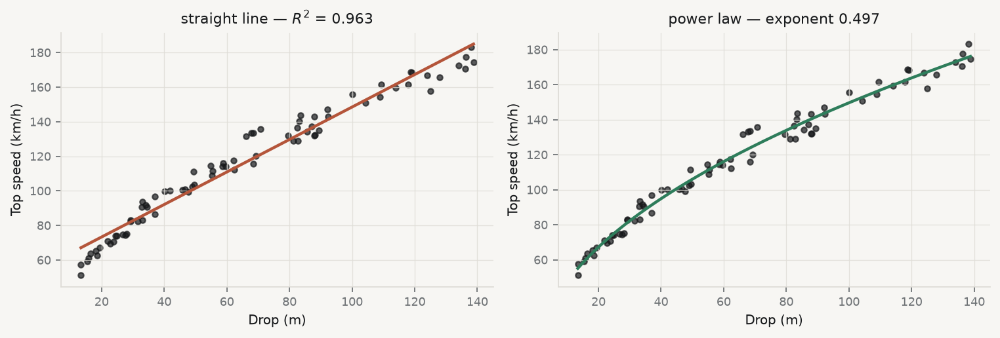
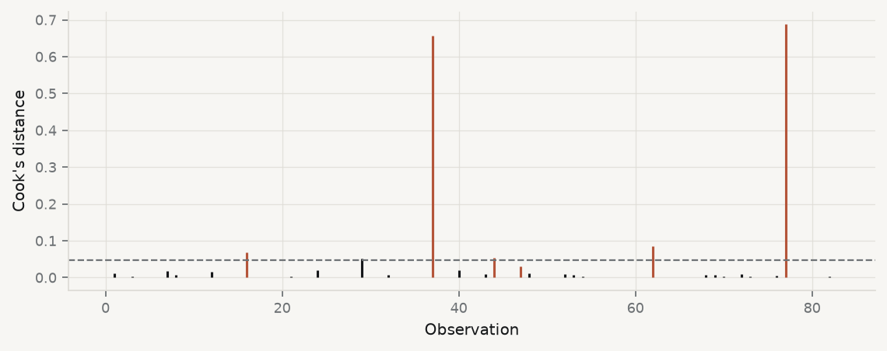

(84, 9)| coaster | drop_m | speed_kmh | propulsion | |
|---|---|---|---|---|
| 0 | Vortex Drop | 37.0 | 96.9 | gravity |
| 1 | Storm Coil | 16.4 | 63.6 | gravity |
| 2 | Nomad Run | 81.2 | 129.1 | gravity |
| 3 | Mantis Plunge | 33.1 | 83.1 | gravity |
| 4 | Phoenix Dive | 114.0 | 159.5 | gravity |
Fitting a line, and finding out whether to believe it
HEC Montréal
smf.ols.get_influence()\[ y_i = \beta_0 + \beta_1 x_i + \varepsilon_i \]
Least squares picks the \(\hat\beta_0, \hat\beta_1\) that make the sum of squared vertical distances as small as possible:
\[ \hat\beta = \arg\min_{\beta} \sum_{i=1}^{n} \left(y_i - \beta_0 - \beta_1 x_i\right)^2 \]
Squared, so that being 4 too high is four times worse than being 2 too high, not twice. Vertical, so the method assumes \(x\) is known and \(y\) is the thing with error in it.
84 roller coasters. Two of the columns are related by a law of physics, and the whole session is about whether a regression can find it.
(84, 9)| coaster | drop_m | speed_kmh | propulsion | |
|---|---|---|---|---|
| 0 | Vortex Drop | 37.0 | 96.9 | gravity |
| 1 | Storm Coil | 16.4 | 63.6 | gravity |
| 2 | Nomad Run | 81.2 | 129.1 | gravity |
| 3 | Mantis Plunge | 33.1 | 83.1 | gravity |
| 4 | Phoenix Dive | 114.0 | 159.5 | gravity |
fig, ax = plt.subplots(figsize=(7.2, 3.2))
for prop, colour in [("gravity", CL.ink), ("launch", CL.warn)]:
sub = d[d.propulsion == prop]
ax.scatter(sub.drop_m, sub.speed_kmh, s=20, alpha=0.8,
color=colour, label=prop)
ax.set_xlabel("Drop (m)"); ax.set_ylabel("Top speed (km/h)")
ax.legend()
plt.show()
Two things, before a single model was fitted:
launch.Fit the whole thing anyway and you get \(R^2\) = 0.46 — mediocre, and the number gives no hint as to which of the two problems caused it.
So we set the six aside provisionally, and come back at the end of the session to justify it with a diagnostic rather than with a glance. Setting rows aside because you looked at a picture is a hypothesis, not a finding.
g = d[d.propulsion == "gravity"].copy() # 78 gravity-driven coasters
lin = smf.ols("speed_kmh ~ drop_m", data=g).fit()
print(lin.summary().tables[1])==============================================================================
coef std err t P>|t| [0.025 0.975]
------------------------------------------------------------------------------
Intercept 54.5139 1.567 34.781 0.000 51.392 57.636
drop_m 0.9397 0.021 44.787 0.000 0.898 0.982
==============================================================================speed_kmh ~ drop_m reads “speed as a function of drop”. The intercept is added for you.
coefficient 0.9397 km/h per metre of drop
std error 0.0210 how much it would wobble on new data
t 44.79 coefficient / std error
95% interval [0.898, 0.982]R2 0.9635
adj R2 0.9630
n 78Ninety-six per cent of the variance in top speed, from one variable. In most fields you would stop here and write it up.
This model is still wrong. Not imprecise — wrong in shape, and \(R^2\) has no way of telling you so. We removed the six rows that were obviously a different mechanism, and the remaining problem is the one \(R^2\) cannot see.
A residual is what the model failed to explain: \(e_i = y_i - \hat y_i\).
Plot the residuals against the fitted values. If the model has the shape right, there is no pattern — the residuals are a formless band around zero. Any structure you can see is signal the model left on the table.

The band is not formless. It rises, peaks, and comes back down — an arch. Bin the residuals and the arch is unmistakable:
bands = pd.cut(g.drop_m, [0, 25, 45, 65, 85, 105, 200])
print(g.assign(resid=lin.resid).groupby(bands, observed=True)["resid"]
.agg(["mean", "count"]).round(2)) mean count
drop_m
(0, 25] -7.33 13
(25, 45] 1.45 15
(45, 65] 3.82 14
(65, 85] 6.44 12
(85, 105] 0.61 10
(105, 200] -4.52 14Small drops: the model over-predicts. Middling drops: it under-predicts. Large drops: it over-predicts again. A straight line is being asked to trace a curve, and it is splitting the difference.
quad = smf.ols("speed_kmh ~ drop_m + I(drop_m**2)", data=g).fit()
t = quad.tvalues["I(drop_m ** 2)"]
print(f"quadratic term: t = {t:.2f}, p = {quad.pvalues['I(drop_m ** 2)']:.2e}")
print(f"linear R2 {lin.rsquared:.4f} -> quadratic R2 {quad.rsquared:.4f}")quadratic term: t = -8.57, p = 9.82e-13
linear R2 0.9635 -> quadratic R2 0.9816\(p \approx 10^{-12}\). The curvature is not a matter of taste. I(...) means “treat what is inside as arithmetic, not as formula syntax” — without it, ** would be read as an interaction.
A car that falls a height \(h\) converts potential energy into kinetic energy:
\[ mgh = \tfrac{1}{2}mv^2 \quad\Longrightarrow\quad v = \sqrt{2gh} \]
Speed goes as the square root of the drop. That is why a straight line could not fit it, and no amount of extra data would have helped.
The fix is not a better line. It is a different functional form.
If \(v = c\,h^{k}\) then taking logs of both sides gives
\[ \log v = \log c + k \log h \]
which is a straight line whose slope is the exponent. So regress \(\log v\) on \(\log h\) and read \(k\) off directly.
g["log_speed"] = np.log(g.speed_kmh)
g["log_drop"] = np.log(g.drop_m)
power = smf.ols("log_speed ~ log_drop", data=g).fit()
k, klo, khi = power.params["log_drop"], *power.conf_int().loc["log_drop"]
print(f"exponent k = {k:.4f} 95% CI [{klo:.4f}, {khi:.4f}]")
print(f"R2 = {power.rsquared:.4f}")exponent k = 0.4971 95% CI [0.4835, 0.5106]
R2 = 0.9859theory says k = 0.5 (v proportional to sqrt(h))
the data says k = 0.4971 95% CI [0.4835, 0.5106]
and the constant c = 15.17
frictionless 3.6*sqrt(2g) = 15.95The confidence interval contains 0.5 and excludes 1. The regression has recovered a law of physics from a spreadsheet of theme-park statistics.
The constant comes in below the frictionless value because real track loses energy. Friction costs speed; it does not change the exponent.

Both fit well. Only one of them means something.
| Outlier | unusual \(y\), given its \(x\). Badly predicted. |
| Leverage point | unusual \(x\). Has the power to move the line. |
| Influential | actually moves it. Needs both. |
A point far from the centre of \(x\) but sitting exactly on the line does no damage. A badly predicted point in the middle of the data does very little either. The damage is done by points that are both.
Leverage is the diagonal of the hat matrix \(H = X(X^\top X)^{-1}X^\top\), and \(h_{ii}\) is how much \(\hat y_i\) responds to \(y_i\). Its total is fixed:
\[ \sum_i h_{ii} = \operatorname{trace}(H) = p \]
full = smf.ols("log_speed ~ log_drop",
data=d.assign(log_speed=np.log(d.speed_kmh),
log_drop=np.log(d.drop_m))).fit()
inf = full.get_influence()
h = inf.hat_matrix_diag
print(f"sum of leverages {h.sum():.6f} (p = {int(full.df_model + 1)})")
print(f"mean leverage {h.mean():.4f} = p/n")
print(f"2p/n screen {2 * 2 / len(d):.4f} {(h > 2*2/len(d)).sum()} above it")sum of leverages 2.000000 (p = 2)
mean leverage 0.0238 = p/n
2p/n screen 0.0476 6 above itThere is a fixed budget of influence, and every observation gets a share. Adding rows does not create more; it divides the same total more finely.
Cook’s distance asks the question you actually care about: if I deleted this row, how far would all the fitted values move?
\[ D_i = \frac{\sum_j (\hat y_j - \hat y_{j(i)})^2}{p\,\hat\sigma^2} \]
It combines leverage with the size of the residual, which is why it is the one number to look at rather than either on its own.
top = np.argsort(cooks)[-6:][::-1]
print(d.iloc[top][["coaster", "drop_m", "speed_kmh", "propulsion"]].to_string(index=False))
fig, ax = plt.subplots(figsize=(7.2, 2.9))
colours = [CL.warn if p == "launch" else CL.ink for p in d.propulsion]
ax.vlines(range(len(cooks)), 0, cooks, color=colours, lw=1.4)
ax.axhline(4 / len(d), color=CL.muted, ls="--", lw=1)
ax.set_xlabel("Observation"); ax.set_ylabel("Cook's distance")
plt.show() coaster drop_m speed_kmh propulsion
Nomad Chase 13.6 216.0 launch
Tempest Dive 12.1 185.7 launch
Onyx Plunge 25.9 168.4 launch
Grizzly Drop 33.9 197.8 launch
Basilisk Coil 44.0 221.3 launch
Vortex Dive 13.4 51.2 gravity
Five of the six most influential observations are launched coasters — propelled by hydraulics or linear motors instead of being dropped.
Energy conservation says nothing about them. They reach 240 km/h from a 40-metre structure because a motor put the energy in. They are not outliers in the sense of bad measurements. They are a different physical system, and they should never have been in the regression.
This is the sequence to internalise: a diagnostic points at rows → you go and read the rows → the rows tell you the model was mis-specified. The diagnostic did not tell you to delete anything. It told you where to look.
print(f"gravity only (n={len(g)}): k = {k:.4f}")
print(f"all 84 coasters: k = {full.params['log_drop']:.4f}")gravity only (n=78): k = 0.4971
all 84 coasters: k = 0.3722Six rows out of 84 — seven per cent of the data — move the exponent from 0.50 to 0.37, and 0.37 corresponds to no law of anything. The interval around it is narrow and confidently wrong.
And this is the justification we owed from the opening slide. We set those rows aside because a picture suggested it; we keep them aside because Cook’s distance identified them, the propulsion column explains them, and the physics says they belong to a different model.
Deleting rows is a modelling decision that has to be argued for. “They are a different mechanism, and here is the column that says so” is an argument. “They were far from the line” is not.
\(R^2\) is the least informative number in the output, and it is the one most often reported alone.
Essentials of Data Science in Python · Session 01 · Thierry Warin, PhD